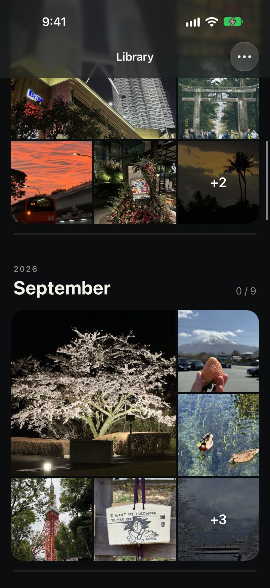
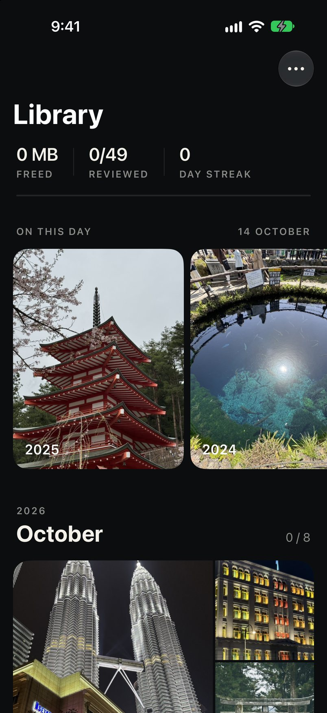
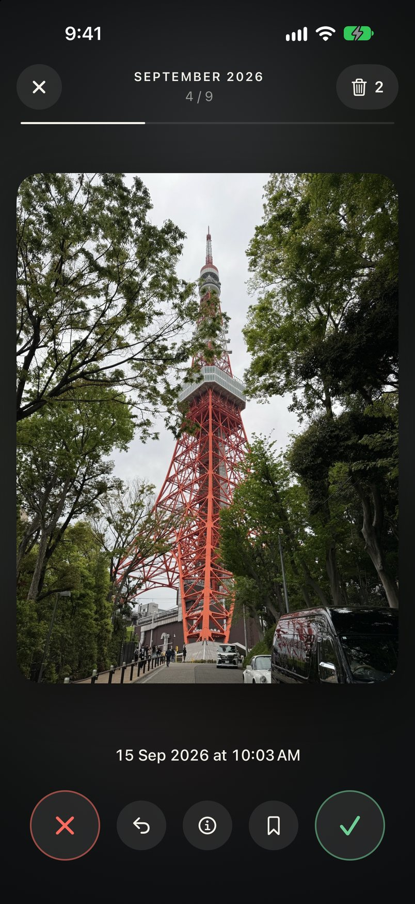
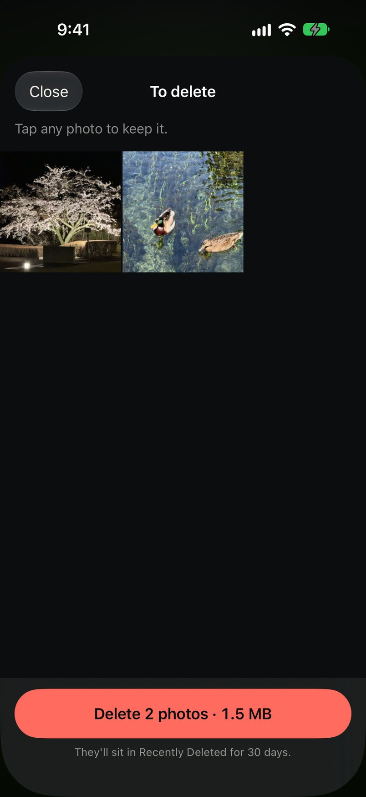

Your library, a month at a time
Every month shows as a block of its own photos with a thin line of progress under it. Pick one and start. Finished months turn grey and get a tick.

iPhone app · October 2026
Clear out a camera roll by swiping. Right keeps a photo, left bins it, and nothing goes until you've looked over the pile.
Ads or sign-ups
Photos leave the phone
Automated tests

How it works
Every month shows as a block of its own photos with a thin line of progress under it. Pick one and start. Finished months turn grey and get a tick.

One photo at a time, at its own shape. A quick flick is enough. Undo steps back as far as you like, and a bookmark parks the ones you can't decide on.

Swiping only marks a photo. The marked ones wait in a grid where a tap rescues any of them. Deleting takes your tap, then Apple's own confirmation.

The library keeps count of the space freed, how much you've reviewed, and how many days in a row you've kept at it.
How it was built
I study finance. I'm not a software engineer and I can't write Swift. What I can do is describe what I want, judge what comes back, and say no.
The idea came from a swipe-to-clean app I'd tried and liked, until the weekly subscription. I wanted the same loop on my own phone with no paywall, so I asked Claude Code to build one from scratch in a single sitting on 14 October 2026.
The code was the quick part. The first design came back as a navy card with stat tiles on cream, and I threw it out: it looked machine-made. The second attempt started from a different question, which was what a photo app should look like when the photos are the point. That gave the version here: black, photos edge to edge, almost no interface.
The other thing I pushed on was feel. The first build made you wait a quarter of a second between swipes. Now a swipe counts the instant you let go, and the old card flies off on its own while the next one is already live.
Is it safe
Install
That is free, but it needs a Mac. Publishing to the App Store costs US$99 a year, which I haven't paid. The full walk-through, with every click, is in the README on GitHub.
Good to know: an app installed this way stops opening after 7 days. Plug in and press Run again to renew it. Your progress is kept. It also can't update itself, so click Watch on the GitHub page to get an email when a new version is out.